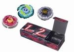

Beyblade Deck Entry Set
TAKARA-TOMY released this set on April 24th, 2010 for approximately 2625 yen.
| Beyblade Deck Entry Set | |
|  | |
| Number: | BB-75 |
|---|---|
| System: | Metal Fight Beyblade |
Contents
Contents
- Galaxy Pegasis W105R²F (Clear white Face, clear turquoise and green Clear Wheel, turquoise Metal Wheel, clear blue Track and Bottom)
- Earth Virgo T125ES (Clear orange Face, Track and Bottom, clear red Clear Wheel)
- Rock Orso ED145D (Clear grey Face, clear black Clear Wheel, Track and Bottom)
- Bey Deck Case
Overall
This Set was released to promote the Deck System which TAKARA-TOMY installed in their Asian WBBA tournaments. Generally, that system consists of choosing three combos before the beginning of a BeyBattle and sealing them in the Bey Deck Case. A different Beyblade must be selected for each match, and the Metal Wheels usually have to be different. It can even be required that the customizations be different types. All these rules explain the variety of parts in this product.
This product has interesting recolours, but it is comprised of thoroughly outclassed parts almost exclusively. R²F is the only notable part available in this Set, and it can be obtained in more worthwhile Sets or in more regular releases. The Deck System is also not followed anymore in tournaments in Asia, therefore the Bey Deck Case does not add value to the Set. Overall, there is no need to purchase this Set outside of collection purposes.